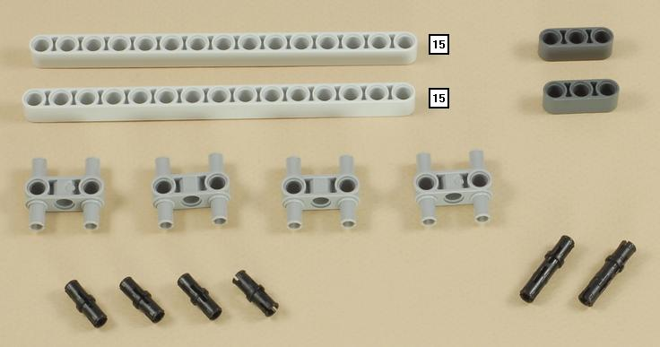
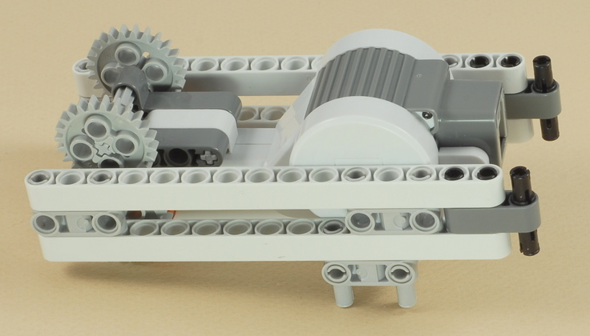
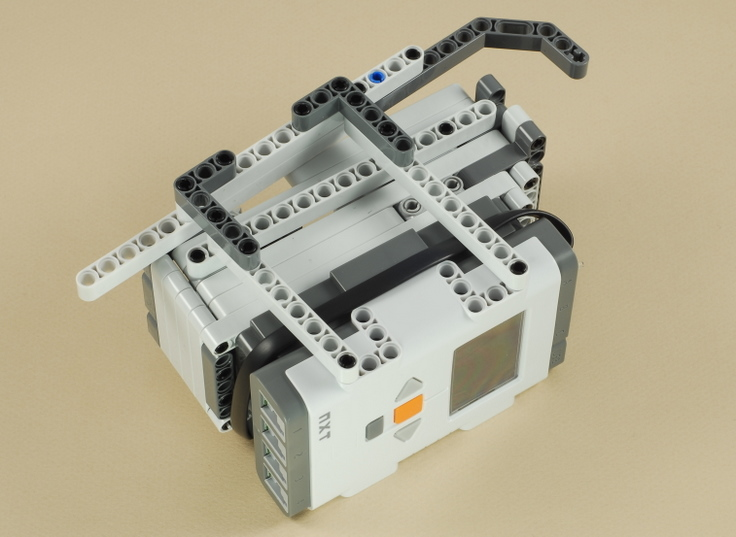

Fun Projects for your LEGO® MINDSTORMS® NXT!
|
|
Fun Projects for your LEGO® MINDSTORMS® NXT! |
| Dog Sled Team |
|

1
2
3



4
5
6
7
8
9
| Use a medium length (35 cm) wire to connect the
hidden motor to port A on the NXT. This is a tight fit, but
it will make it. Attach the wire to motor first, wrap it around
the NXT as shown, then plug it into the NXT. |
10

11
| Note that the ski attaches to the NXT at a slight angle. |

12
13
14
15
16
17
18
| Repeat steps 14-17 to build another dog, using the light sensor or sound sensor instead of the touch sensor in step 16. The sensors are only for decoration and will not be used as sensors. |
19
| Use the shortest (20 cm) wire to connect one dog to port B, and a medium length (35 cm) wire to connect the other dog to port C on the NXT. |
| Dog
Sled Team Programming Use the Dog_Sled program for your Dog Sled Team. This is a simple program that just runs all three motors at full power. |
Challenges
|
|
Copyright
©
2007-2009 by Dave Parker. All rights reserved. |